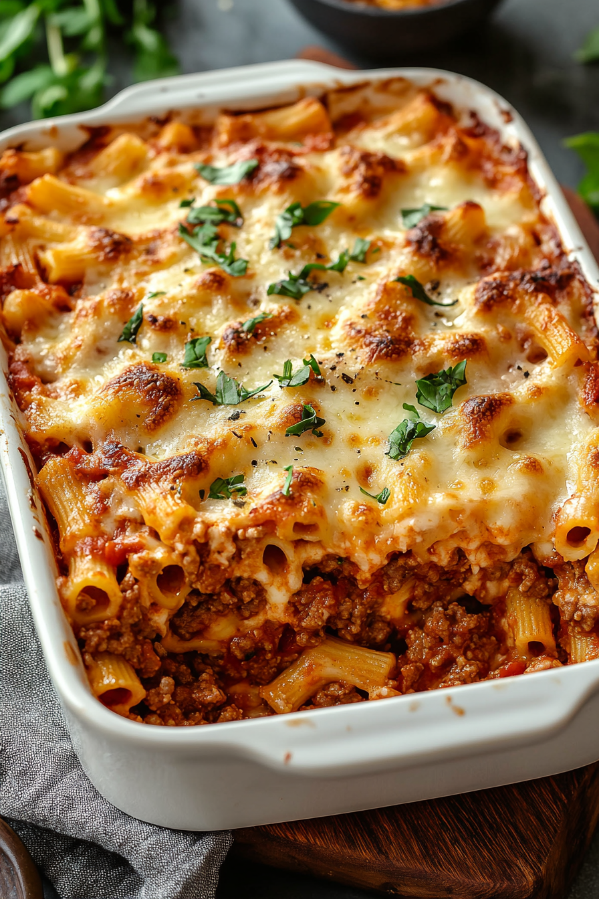

Baked Ziti

Baked Ziti is a comforting and flavorful Italian-American dish that consists of ziti pasta, typically mixed with marinara sauce, ricotta cheese, mozzarella, and Parmesan, then baked to perfection.
The pasta is first boiled until al dente, then combined with a hearty tomato-based sauce, often enriched with garlic, onions, and Italian herbs. A generous amount of ricotta cheese is added to the mix,
giving the dish a creamy texture that complements the richness of the tomato sauce. The mixture is then topped with a layer of shredded mozzarella and Parmesan, creating a golden, bubbly crust as it
bakes in the oven.
The result is a hearty, satisfying casserole that’s perfect for family meals, potlucks, or any occasion where comfort food is called for. The combination of savory tomato sauce, melted cheese, and tender pasta
offers a mouthwatering experience. Variations of baked ziti can include meatballs, sausage, or ground beef for added protein, or it can be made vegetarian by using extra vegetables like mushrooms, spinach, or
zucchini. Whether served as a main dish or paired with a side salad, baked ziti is always a crowd-pleaser.
Ingredients
- Ziti Pasta (about 1 pound)
- Ground Beef (abount 1 pound)
- Marinara Sause (about 4 cups, or you can use a store-bought jar or homade)
- Ricotta cheese (15 ounces)
- Mozzarella cheese (2 cups shredded)
- Parmesan cheese (1/2 cup grated)
- Egg (1 large, to mix with ricotta for a creamy texture)
- Garlic (2-3 cloves, minced)
- Olive oil (for sautéing the beef and onion)
- Italian seasoning (1 tablespoon)
- Salt and pepper (to taste)
- Fresh Basil or parsley (optional, for arnish)
Instructions
**Prases in bold represents aa a checkpoint in the making of this recipie. Enjoy!!
- Cook the Pasta: Bring a large pot of salted water to a boil.
- Add the ziti pasta and cook 1-2 minutes less than the package instructions (it will continue cooking in the oven).
- Drain the pasta and set it aside
- Cook the Beef and Sauce:Heat 1 tablespoon of olive oil in a large skillet over medium heat.
- Add the minced garlic and cook for 30 seconds until fragrant.
- Add the ground beef and cook until browned, breaking it apart with a spoon. Drain excess grease if needed.
- Season with Italian seasoning, salt, and pepper to taste.
- Pour in the marinara sauce, stir, and let simmer for 5-10 minutes to blend flavors.
- Prepare the Ricotta Mixture: in a medium bowl, mix together:
Ricotta cheese
- 1 Egg
- ½ cup of shredded mozzarella
- ¼ cup of grated Parmesan cheese
- A pinch of salt and pepper
- Stir welll unti combined
- Assemble the Baked Ziti:Preheat your oven to 375°F (190°C).
- In a large baking dish, spread a thin layer of meat sauce on the bottom.
- Layer half of the cooked ziti pasta over the sauce.
- Spread half of the ricotta mixture over the pasta.
- Pour half of the remaining meat sauce over the ricotta layer.
- Repeat the layers: remaining ziti → remaining ricotta → remaining meat sauce.
- Sprinkle the remaining mozzarella and Parmesan cheese evenly on top.
- Bake: Cover the dish with foil and bake for 20 minutes.
- Remove the foil and bake for an additional 10-15 minutes or until the cheese is bubbly and golden.
- Serve and Enjoy: Let the baked ziti rest for 5-10 minutes before serving.
- Garnish with fresh basil or parsley (optional).
- Serve warm and enjoy your delicious homemade baked ziti!
Hope you enkoy your new baked ziti. It is not cpmlicated to make but it is a long processs. It will be worth it in the end :)
Home